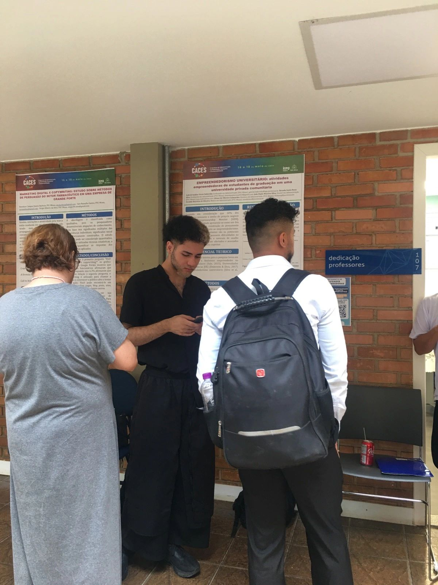
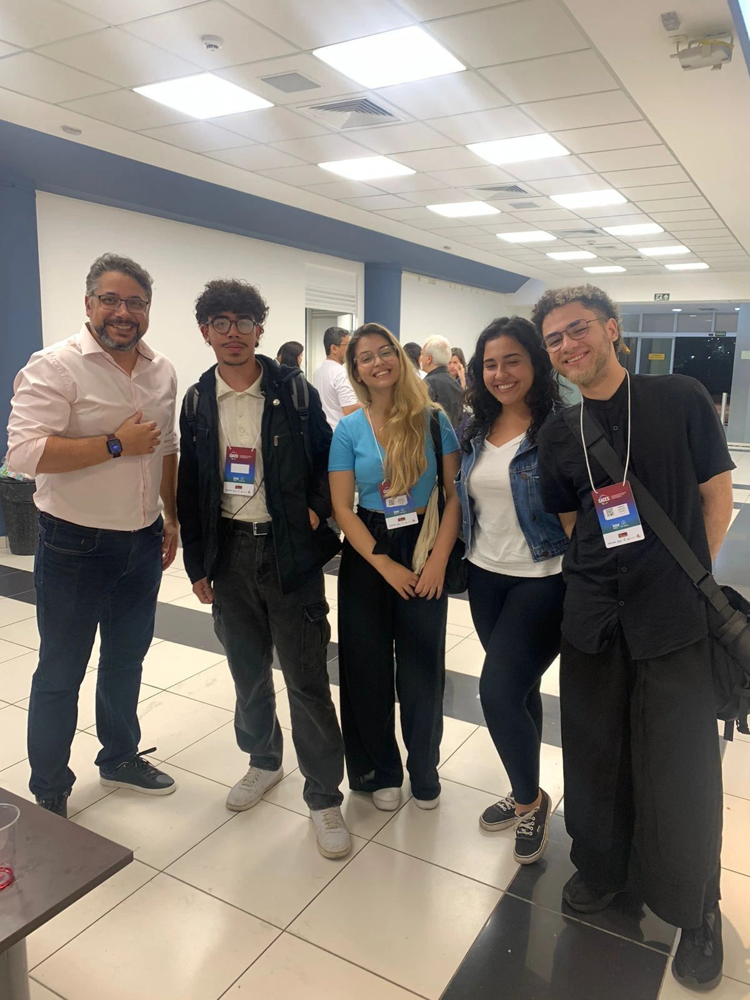

Que experiência incrível! A poeira do I Congresso Nacional de Administração, Contabilidade, Economia e Sustentabilidade (CACES) mal assentou, e a minha mente ainda está processando a avalanche de conhecimento, conexões e inspiração que vivenciei. Eventos como este são um lembrete poderoso de como a troca de ideias pode expandir nossa visão e nos desafiar a pensar diferente.
Para mim, esta edição teve um significado especial. Além de mergulhar em palestras que provocaram ótimas reflexões, tive a honra de subir ao palco para apresentar meu primeiro artigo científico.
Nossa Pesquisa: Um Olhar Sobre o Empreendedorismo na Universidade
Juntamente com minha amiga e parceira de pesquisa, Brenda Santa Rosa, e sob a orientação dos professores Liliane Guimarães, João Paulo Silva e Osvaldo de Oliveira, desenvolvemos o trabalho intitulado “EMPREENDEDORISMO UNIVERSITÁRIO: atividades empreendedoras de estudantes de graduação em uma universidade privada comunitária”.
O Brasil é reconhecido como um país empreendedor, mas sabemos que o caminho de quem decide abrir o próprio negócio é cheio de barreiras. Nesse cenário, a universidade surge como um ecossistema fundamental para fomentar a inovação. Nossa pesquisa buscou entender exatamente isso: quem são os estudantes que já empreendem durante a graduação? Quais são suas motivações e como a universidade pode apoiá-los?

Os dados que coletamos revelaram insights importantes:
- O Perfil do Negócio: O empreendimento mais comum é uma pequena empresa, muitas vezes gerenciada e operada pelo próprio estudante, com destaque para o setor de alimentação. Apesar de pequenos, uma parcela considerável já busca a formalização (possuindo CNPJ).
- Motivações Diversas: As razões para empreender são um misto de necessidade (“ganhar a vida pela escassez de empregos”) e ambição (“construir uma grande riqueza”). Além disso, um número expressivo de estudantes continua uma tradição familiar de negócios.
- A Conexão com a Universidade: Aqui está um ponto crucial. Embora a universidade ofereça programas de fomento, como pré-incubação e aceleração, uma parte significativa dos alunos não os conhece. No entanto, o interesse é enorme, especialmente por mentorias e treinamentos em áreas como Marketing, Negócios e Finanças.
Esses dados mostram uma oportunidade gigantesca para que as instituições de ensino se aproximem ainda mais de seus alunos empreendedores, oferecendo o suporte certo para que suas ideias decolem.
A Experiência de Apresentar e Aprender
Apresentar nossa pesquisa foi, sem dúvida, um momento de orgulho e um aprendizado imenso. Receber o feedback de especialistas e colegas foi extremamente valioso e nos deu ainda mais gás para continuar investigando o tema. É a ciência acontecendo na prática: pesquisar, compartilhar, debater e evoluir.
A Experiência de Apresentar e Aprender
Apresentar nossa pesquisa foi, sem dúvida, um momento de orgulho e um aprendizado imenso. Receber o feedback de especialistas e colegas foi extremamente valioso.
Para quem quiser se aprofundar, aqui estão os links:

Tivemos a chance de conhecer e trocar ideias com profissionais incríveis de diversas áreas, criando um verdadeiro ecossistema de inovação e colaboração.

Para fechar o evento com chave de ouro, ainda ganhei um livro que, com certeza, será uma nova fonte de conhecimento para essa jornada.
Gostaria de deixar meu profundo agradecimento à PUC Minas e ao ICEG - Escola de Negócios, em especial à Profa. Carolina Colares, pela organização impecável do congresso. Foi um ambiente perfeito para a inovação e a colaboração.

Já estou ansioso pela próxima edição do CACES!